Gli angoli
Angolo è ciascuna delle due parti illimitate in cui due semirette, aventi l'origine in comune, dividono un piano.
L'origine comune, prende nome di origine o vertice dell'angolo. Le semirette si dicono lati dell'angolo;
Un angolo si dice:
convesso se non contiene i prolungamenti delle semirette (minore di un agolo piatto).
concavo se contiene il prolungamento delle semirette (maggiore di un angolo piatto).
Gli angolo α e β sono rispettivamente convesso e concavo.
Classifichiamo gli angoli
L'angolo le cui semirette sono oppose è detto angolo piatto.
Se le due semirette coincidono si determinano due angoli: l'angolo giro e l'angolo nullo. L'angolo gito è quello a cui appartengono tutti i punti del piano.
Sono consecutivi gli angoli che hanno il vertice e un lato in comune.
Sono adiacenti gli angolo che sono consecutivi e i cui lati non comuni appartengono alla stessa retta.
Due angoli si dicono complementari se la loro somma è un angolo retto, supplementari se la loro somma è un angolo piatto e infine esplementari se la loro somma è un angolo giro. Due si dicono opposti al vertice se i prolungamenti di uno corrispondono ai lati dell'altro, cioè semirette opposte. Due angoli opposti al vertice sono uguali.
Gli angoli supplementari hanno lo stesso seno
sin α = sin β
e lo stesso coseno ma di segno opposto
cos α = −cos β
Angolo acuto < 90°.
Angolo ottuso 90° < α < 180°.
Angolo concavo > 180°.
Angolo convesso < 180°.
Definizione. La bisettrice di un angolo è la semiretta uscente dal vertice che divide l'angolo in due angoli congruenti. □